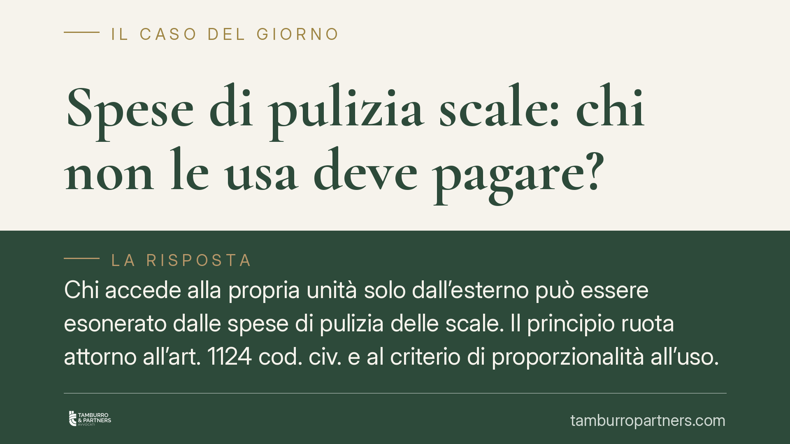

Spese di pulizia scale: chi non le usa deve pagare?
Chi accede alla propria unità solo dall'esterno può essere esonerato dalle spese di pulizia delle scale. Il principio ruota attorno all'art. 1124 cod. civ. e al criterio di proporzionalità all'uso. Diverso è il caso di chi, pur avendo accesso dal vano scala, sceglie di non servirsene. Un tema che tocca ripartizioni, delibere e tabelle millesimali.

Il caso e la questione
La domanda è ricorrente nelle assemblee: il proprietario di un locale con ingresso autonomo dalla strada, che non transita mai dal vano scala comune, deve concorrere alle spese della sua pulizia e manutenzione?
La risposta della giurisprudenza di legittimità è articolata e distingue due situazioni che spesso vengono confuse: l'esonero oggettivo di chi non può materialmente usare la scala, e la scelta soggettiva di chi, pur potendo, decide di non servirsene.
Inquadramento normativo
Per le scale la norma di riferimento è l'art. 1124 cod. civ., che detta un criterio speciale rispetto alla regola generale dell'art. 1123 cod. civ. Le spese di manutenzione e ricostruzione delle scale (e, per analogia applicativa, quelle di pulizia) si ripartiscono tra i proprietari delle unità servite in due quote: metà in ragione del valore millesimale delle singole unità, metà in misura proporzionale all'altezza di ciascun piano dal suolo.
La logica è intuitiva: chi abita più in alto usura di più la scala e ne beneficia maggiormente, perciò contribuisce in proporzione al piano. È qui che opera il principio di proporzionalità all'uso, già presente nell'art. 1123, comma 2, cod. civ.
L'esonero del proprietario con accesso esclusivamente esterno non discende in modo automatico dalla sola lettura dell'art. 1123, comma 2: è piuttosto l'esito di un consolidato orientamento giurisprudenziale che, combinando l'art. 1124 cod. civ. con il criterio dell'utilità, esclude dalla contribuzione chi non trae alcun vantaggio oggettivo dal bene comune perché la scala non serve in alcun modo la sua unità.
Esonero oggettivo e scelta soggettiva
La distinzione è decisiva.
È esonerato chi ha un accesso autonomo e indipendente e per il quale la scala non costituisce in alcun caso via di transito: in questo caso manca il presupposto stesso dell'utilità, e la contribuzione non è dovuta.
Non è invece esonerato chi dispone di accesso dal vano scala ma sceglie di non utilizzarlo (ad esempio preferendo l'ascensore o un ingresso secondario). La facoltà di non usare un bene comune, quando il bene è comunque a disposizione e astrattamente utile, non elimina l'obbligo di contribuire alle spese. Vale il principio per cui conta l'utilità potenziale, non l'uso effettivo.
Trasformazione delle soffitte e tabelle millesimali
Un profilo collegato riguarda il mutamento di destinazione dei sottotetti. Quando una soffitta non abitabile viene trasformata in unità abitativa autonoma, cambia il valore della porzione e, spesso, l'intensità d'uso delle parti comuni, scale comprese.
L'art. 69 disp. att. cod. civ. consente la revisione o la rettifica delle tabelle millesimali quando risulta un'alterazione per più di un quinto del valore proporzionale di una o più unità, anche per effetto di mutate condizioni di una parte dell'edificio. La trasformazione di un sottotetto in abitazione può integrare proprio questa ipotesi, imponendo l'aggiornamento dei valori e, di riflesso, del riparto delle spese di scala.
Implicazioni pratiche
Per l'amministratore e per i condomini le conseguenze sono concrete. Addebitare le spese di scala a un proprietario con accesso solo esterno espone la delibera a impugnazione per violazione del criterio di riparto. All'opposto, esonerare chi semplicemente non usa la scala pur potendo genera un ammanco che grava indebitamente sugli altri.
Sul fronte delle tabelle, continuare ad applicare valori superati dopo la trasformazione di un sottotetto significa ripartire su basi errate, con il rischio di contestazioni anche a distanza di tempo.
Cosa fare in concreto
- Verificare la configurazione degli accessi di ciascuna unità: distinguere chi ha ingresso autonomo esterno da chi ha accesso dal vano scala.
- Applicare il criterio dell'art. 1124 cod. civ.: metà in base ai millesimi, metà in base all'altezza di piano, limitando la ripartizione ai soli condomini serviti dalla scala.
- Documentare nel verbale la ragione dell'eventuale esonero, ancorandola all'assenza oggettiva di utilità e non a scelte soggettive.
- Controllare se trasformazioni di soffitte o sottotetti abbiano alterato i valori oltre il quinto: in tal caso è opportuno far esaminare le tabelle vigenti ex art. 69 disp. att. cod. civ.
- Inserire in assemblea un punto dedicato alla revisione delle tabelle prima di deliberare ripartizioni basate su dati non aggiornati.
---
Contributo informativo a cura di Tamburro & Partners - Avv. Giuseppe Tamburro. Non costituisce parere legale.
Ogni condominio ha una storia a sé.
Se gestisci un'amministrazione e vuoi un confronto su una specifica questione condominiale, scrivi allo studio. Ti rispondiamo entro un giorno lavorativo.